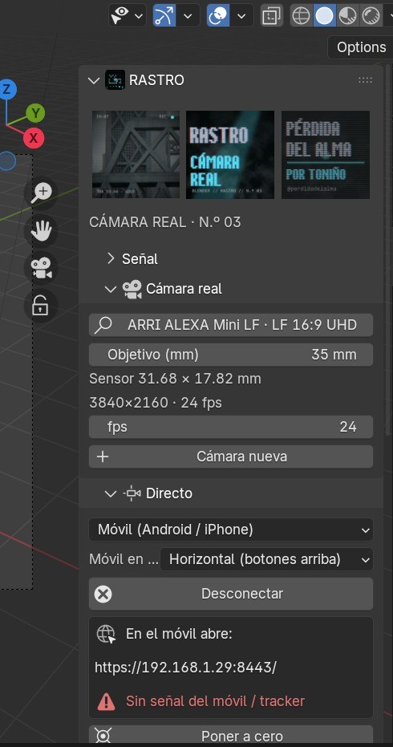
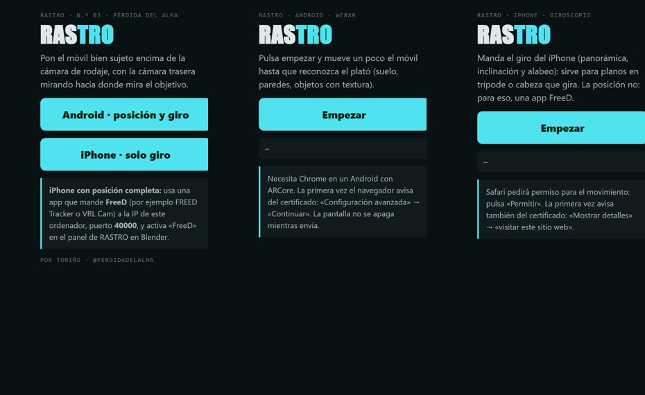
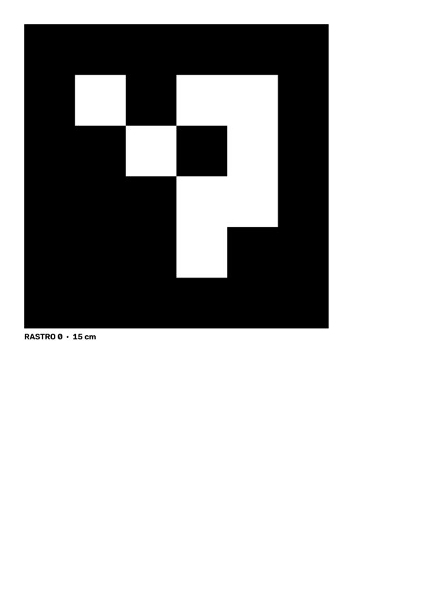
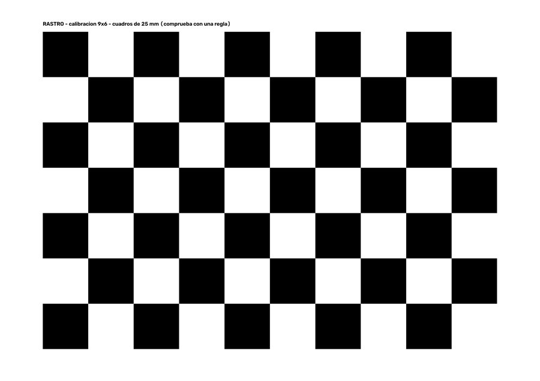
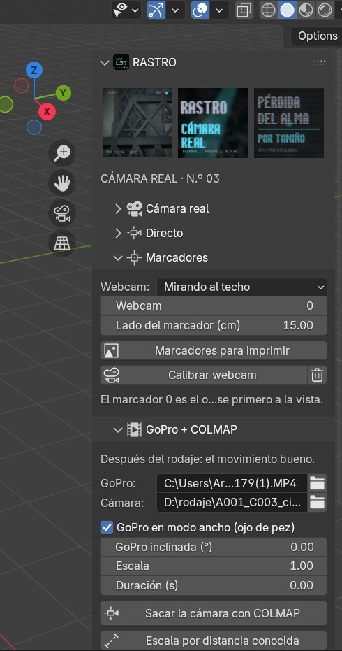

RASTRO es un plató virtual sencillo: la cámara con la que ruedas mueve la cámara de Blender, para ver al actor dentro del decorado mientras grabas y para tener después el movimiento exacto con el que rematar el plano. Hace lo esencial de los sistemas profesionales (Pixotope y compañía) sin su complicación: un móvil, unos marcadores impresos o una GoPro.
01 · qué necesitasAntes de empezar
- Blender 4.2 o más nuevo (probado en 4.5 y 5.0). Mejor una gráfica decente para ver el decorado en directo.
- Según cómo trackees: un móvil Android o un iPhone, una webcam y papel, o una GoPro.
- La primera vez, internet: el addon instala solo OpenCV y cryptography en
~/RASTRO/libs(botón Instalar lo que falta).
02 · instalaciónInstalar
rastro.zip, y actívalo.03 · cámara realTu cámara en Blender
Pulsa Elegir cámara y busca la tuya: el catálogo tiene 57 cámaras y 82 modos de grabación (ARRI, Apple, Blackmagic, Canon, DJI, Fujifilm, GoPro, Google, Nikon, Panasonic, RED, Samsung, Sony). Cada modo lleva el tamaño de sensor que usa de verdad (en vídeo muchas cámaras recortan), su resolución y sus fps; la cámara de Blender se queda igual. Solo falta poner el objetivo en milímetros. Si la tuya no está, Cámara nueva: marca, modelo, sensor y resolución.

04 · directoQue la cámara de Blender siga a la real
Elige la fuente en Directo, pulsa Conectar, apunta la cámara real a algo y pulsa Poner a cero: desde ese momento la cámara de Blender se mueve igual que la real, partiendo de donde la tenías.
Móvil Android (posición y giro)
https://…:8443), acepta el aviso del certificado y pulsa Android › Empezar.iPhone
Safari no deja usar la realidad aumentada desde una web, así que hay dos maneras:
- Solo giro, sin instalar nada: la misma dirección › iPhone › Empezar y permitir el movimiento. Para planos en trípode o cabeza que gira. Indica en el panel cómo va puesto el móvil.
- Posición y giro: una app que mande FreeD (FREED Tracker, VRL Cam…) a la IP del ordenador, puerto 40000, y en el panel la fuente FreeD.

FreeD
El protocolo de los platós virtuales: además de las apps de iPhone lo mandan trackers profesionales y cámaras robotizadas (PTZ). Si algún eje va al revés, usa Invertir pan / tilt / roll.
Ajustes
- Suavizado: quita el temblor con la cámara quieta sin retrasar los movimientos rápidos.
- Retraso: la imagen de la cámara suele llegar más tarde que el tracking; retrásalo hasta que casen.
- Escala: 1 = un metro del plató es un metro en Blender. Para decorados enormes, más.
- Móvil respecto al objetivo (cm): dónde va el móvil visto desde la cámara (X derecha, Y arriba, Z hacia atrás).
05 · marcadoresCon papel y una webcam
Lo más fiable sin móvil: una webcam encima de la cámara mirando al techo, donde se pegan los marcadores. No salen en la toma y el actor no los tapa. También se pueden poner en el croma con la webcam mirando al frente.
Dónde ponerlos
Pon la distancia de la cámara al techo (o a la pared / al suelo) y pulsa Dónde poner los marcadores. RASTRO calcula cuántos hacen falta, a qué separación y de qué tamaño para que la cámara vea siempre dos o más en la zona por donde se mueve (su animación, o el ancho × fondo que le digas). Los coloca en la escena, abre la carpeta para imprimir con las hojas justas y un plano con las medidas desde el marcador 0, y pone el «ARRIBA» de cada hoja hacia el decorado.
Mientras mueves la cámara, si ve menos de dos marcadores, RASTRO pone en la escena un cuadrado «aquí falta un marcador» donde apunta y te dice en el móvil y en el panel qué número pegar ahí (el del plan que toca, o el siguiente libre). Recorre el movimiento del plano antes de rodar y ve rellenando huecos. Abrir carpeta de marcadores abre en el Explorador RASTRO_imprimir.pdf: el plano, las hojas y el tablero juntos, para imprimir de una vez a tamaño real.
El marcador 0 de la escena es el ancla: donde esté en Blender es donde está el 0 en el plató. Así todas las tomas, y todos los días, caen en el mismo sitio sin poner a cero. Para mover el decorado respecto al plató, mueve la colección del plan.



06 · tomaGrabar el movimiento
Grabar toma mientras ruedas y Parar al acabar: el movimiento queda como fotogramas clave en la cámara (uno por fotograma,
a los fps de la escena) y en //rastro/toma_NNN.json. Después se renderiza el decorado con ese movimiento y se compone el
actor recortado con CorridorKey.
Con claqueta
Deja marcada en el móvil la casilla Escuchar la claqueta y en Blender pulsa Esperar la claqueta. Al oír el golpe, el móvil avisa y la toma empieza en ese instante, en el fotograma en el que estés: en el montaje, pon ahí el golpe de la claqueta del clip de la cámara y casan solos.
La toma acaba al decir «¡corten!» (el móvil lo reconoce) o con el botón ¡CORTEN! del móvil, y se queda esperando la siguiente claqueta. Cada toma es su propia cámara, «RASTRO P01 T03» (plano y toma, como en la escaleta), en la colección «RASTRO · tomas»; el plano se cambia en el panel o con − / + en el móvil. En el móvil sale el listado de tomas para marcar cada una como buena ✔ o mala ✘: se ve en el nombre de la cámara, en el panel y en su .json.
07 · GoPro + COLMAPEl movimiento bueno, después
Lo que mejor sale y lo que menos complica el rodaje: una GoPro fija encima de la cámara, grabando a la vez. Su gran angular ve el plató alrededor y COLMAP saca el movimiento con precisión.
08 · problemasSi algo falla
| Pasa esto | Haz esto |
|---|---|
| El móvil no abre la dirección o se queda cargando | Misma wifi. En Windows la red de casa tiene que estar como Privada (Configuración › Red e Internet › Propiedades › Perfil de red): en una red Pública el firewall bloquea a Blender. La primera vez, acepta el permiso del firewall. |
| «Sin señal del móvil» | En el móvil pulsa Empezar; en Android hay que mover un poco el móvil hasta que reconozca el plató. |
| La cámara gira al revés | iPhone: cambia «Móvil en el soporte». FreeD: Invertir pan / tilt / roll. |
| Tiembla | Sube el suavizado. Con marcadores, más marcadores a la vista y la webcam calibrada. |
| COLMAP no reconstruye | La GoPro tiene que moverse algo y ver plató con textura; prueba con menos duración y más luz. |
09 · cómo se hizoModo de trabajo
Como los otros addons, lo desarrollé con Claude Code: yo decidía qué tenía que hacer en el plató y el asistente escribía el código y lo probaba sin interfaz (móvil y FreeD simulados, marcadores en imágenes sintéticas, la palmada en sonido de prueba) y con mi propio vídeo de GoPro de la zapatilla, donde COLMAP registró los 144 fotogramas de la prueba.
10 · créditosCréditos
RASTRO · Cámara real, por Toniño, para el TFG Pérdida del Alma. GPL 3.0 o posterior. Usa OpenCV (marcadores ArUco), COLMAP (Schönberger y Frahm) y ffmpeg. Los datos de las cámaras son de las fichas públicas de cada fabricante, aproximados.